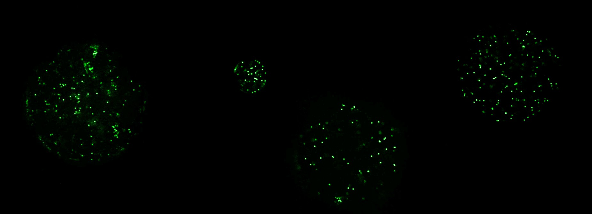

We work in experimental biophysics, focusing on single-molecule fluorescence. We combine this with meso- and macro-scale experiments to link molecular processes to emergent behavior, and we integrate computation and theory to interpret and extend our observations.
Single-molecule biophysics to understand living systems

We are not fully satisfied with current views of how life works. We know a lot about what single molecules do in isolation. But in a cell, a myriad of them work together, and somehow it all stays coordinated. This is prodigious. We don’t really understand how.
We start from the bottom: single molecules, where individual events can be directly observed. Then we go up in scale, to see how these events become properties of a larger system, ideally up to the living state. We are also interested in identifying what goes wrong when these events stop adding up and disease appears.
What we like to do
The lab
This lab led by Nicola Galvanetto opened in 2026 at the Institute of Structural Biology (IBS) in Grenoble. I'm currently setting up the lab and recruiting postdocs, PhD students, and Master's students. If you're excited by single-molecule experiments and quantitative biophysics, email me.